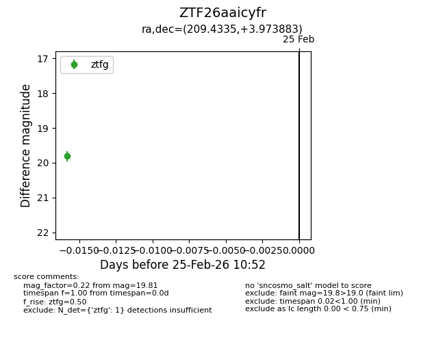
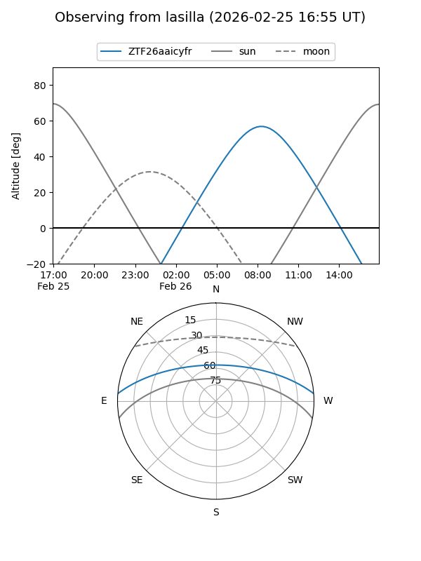
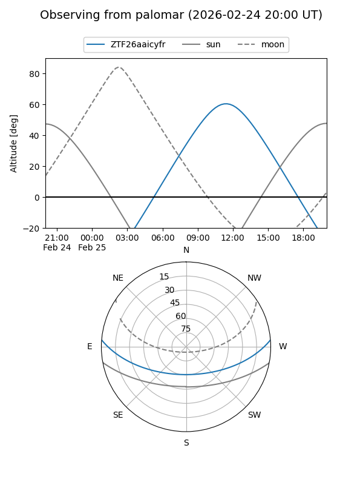

ZTF26aaicyfr
Target ZTF26aaicyfr at 2026-02-25 10:53
Aliases and brokers:
FINK: link
Lasair: link
ALeRCE: link
alt names
ZTF26aaicyfr (ztf,fink_ztf)
Coordinates:
equatorial (ra, dec) = 209.4335,+3.97388
equatorial (HMS+DMS) = 13:57:44.05,+03:58:25.98
galactic (l, b) = (340.1758,+61.95276)
Flags:
Photometry:
last ztfg=19.81
1 ztfg detections
Lightcurve

Visibility


Additional plots